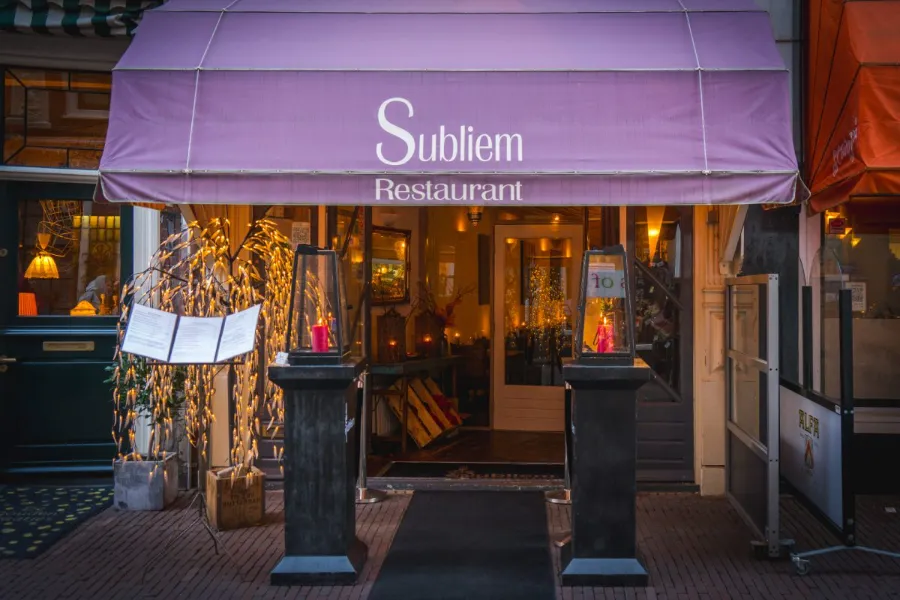
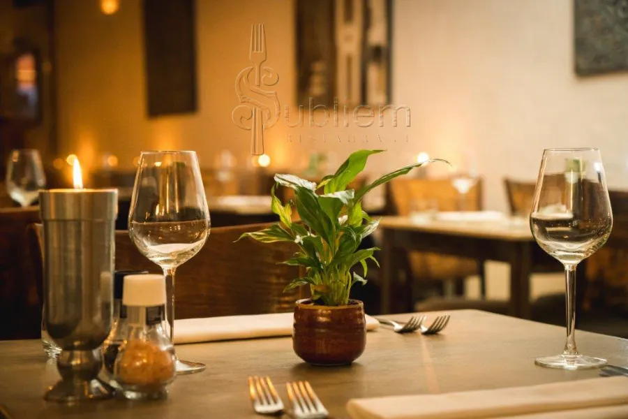
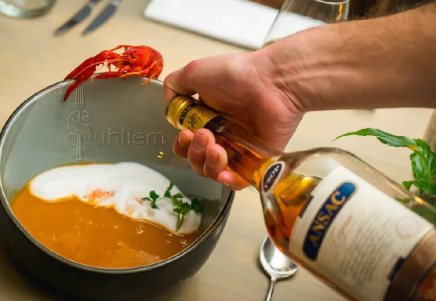
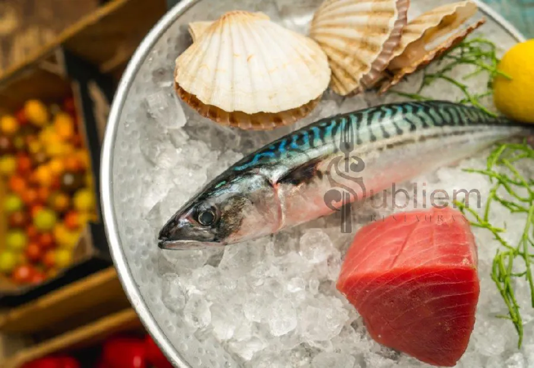
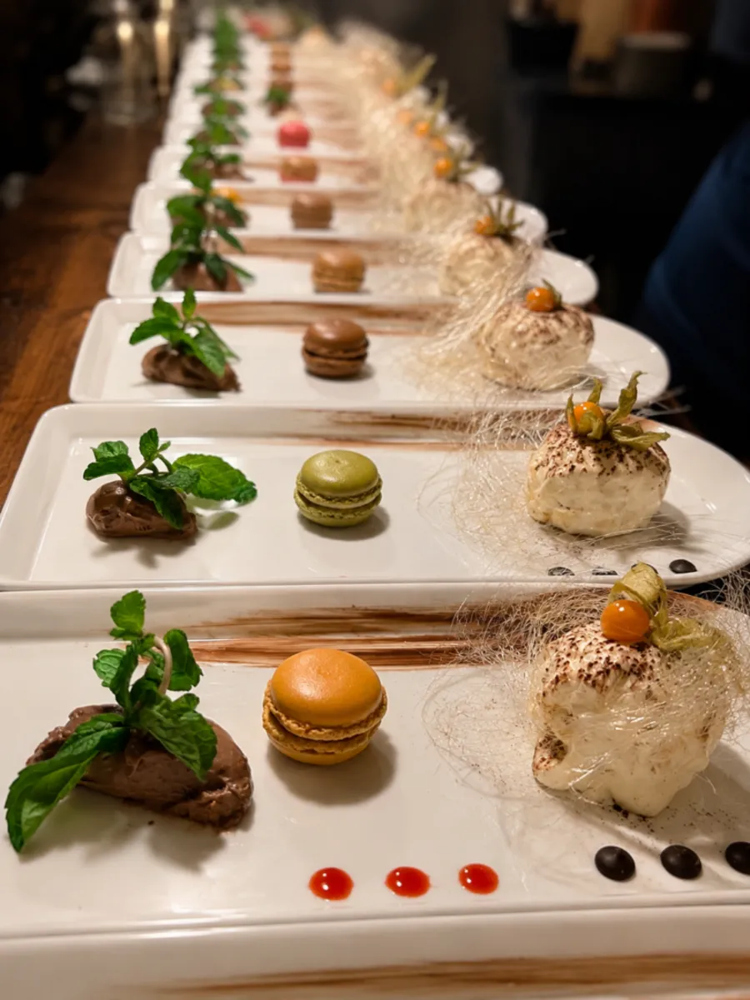
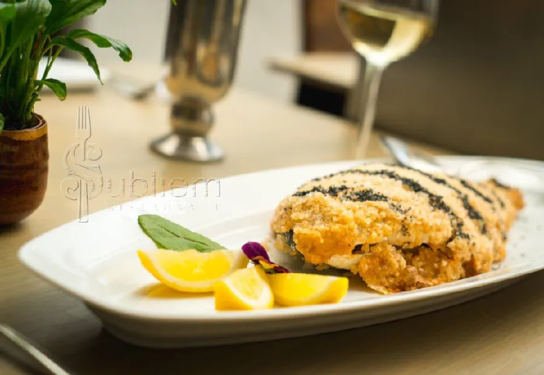
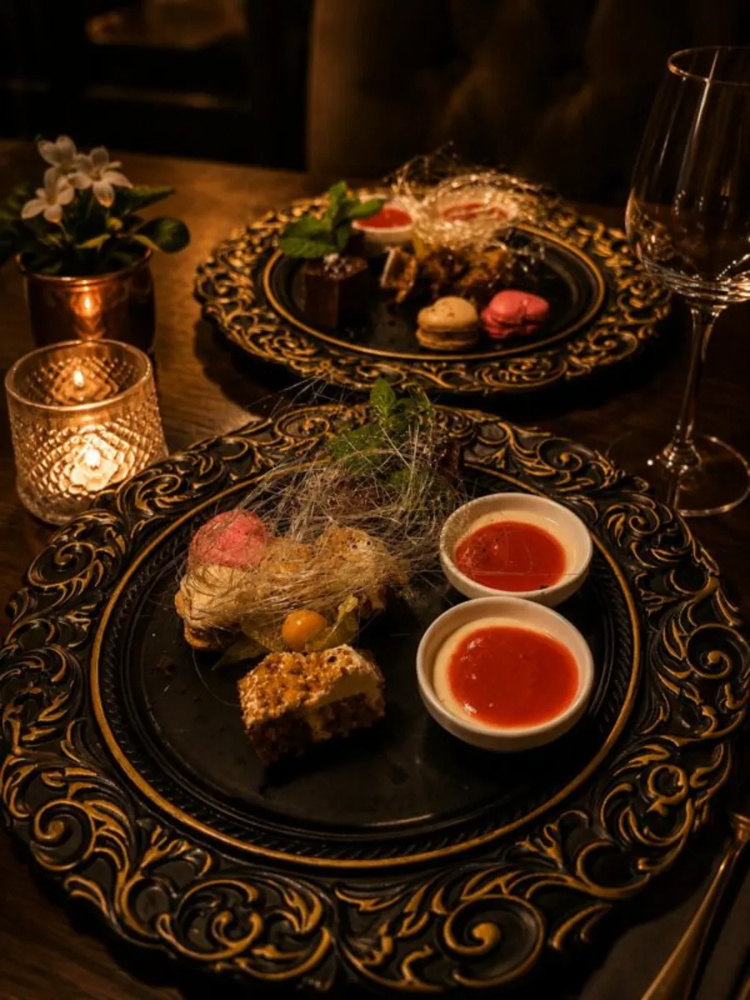
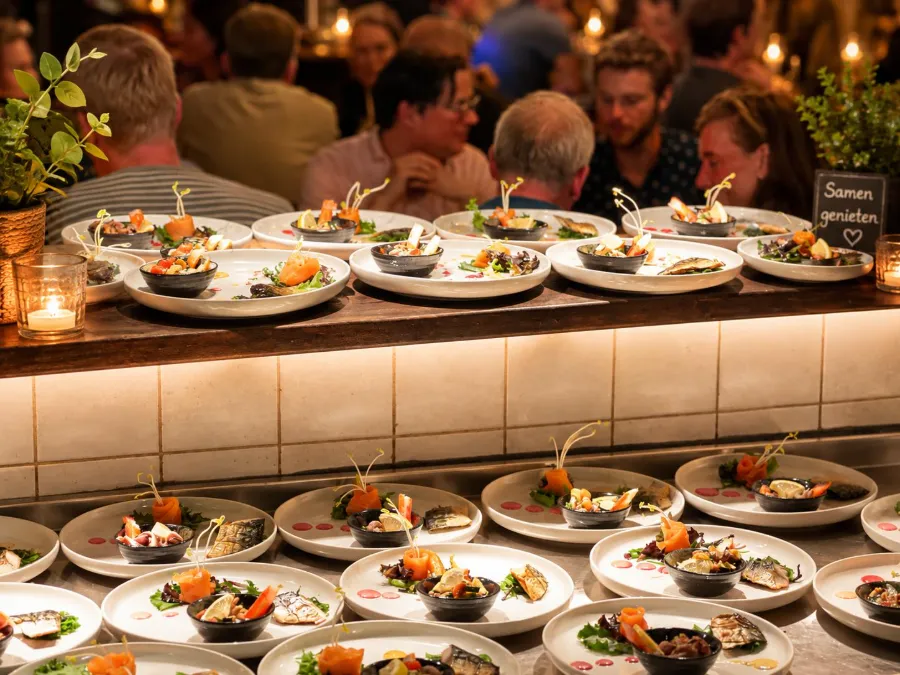
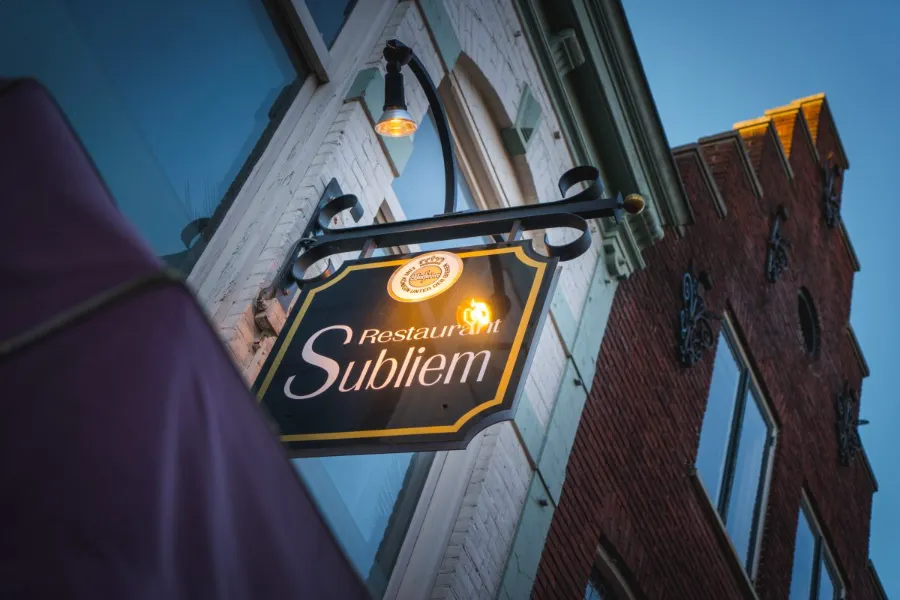

Restaurant Manager
Hands-on leiding in een kleinschalig restaurant. Een 38-urige werkweek, pensioen via Horeca & Catering en een uitstekend salaris. Je woont in of nabij Haarlem en hebt ervaring met reserverings- en kassasystemen.
Kleine Houtstraat 44, Haarlem
Bijzondere gerechten van verse, biologische producten. Sinds 2006 staat onze menukaart onder invloed van de landen rond de Middellandse Zee.
Avocado, mango, limoen, sesam, krokante wonton, wasabi-mayonaise
Pompoen, ricotta, beurre noisette, salie, Parmezaan, hazelnoot
Gebakken coquille, truffelcrème, groene appel, beurre noisette, krokante aardappel, verse truffel
Pommes Anna, knolselderijcrème, wintergroenten, kersen-portjus
Een selectie kleine desserts
Dat is Subliem, het biologisch-mediterrane restaurant aan de knusse Kleine Houtstraat in Haarlem. Makkelijk bereikbaar met het ov en de auto. En de fiets en benenwagen natuurlijk.
Vrijwel alles wat we serveren is gemaakt van biologische producten. Vlees en vis zijn 100% biologisch en van diervriendelijke oorsprong. Liefhebbers van traditionele gerechten zitten hier net zo goed als vegetariërs en veganisten. Heerlijk en eerlijk eten.


We vullen het menu geregeld aan met nieuwe, verrassende combinaties. Bij vis- en vleesgerechten serveren we warme groenten en een aardappelgarnituur.
Dungesneden ossenhaas, truffelmayonaise, kappertjes, pijnboompitten, Parmezaan
Huisgemaakte bosvruchtensaus met kaneel en steranijs, geroosterde walnoten
In olijfolie gebakken gamba's, knoflook, chilipeper, roomboter, knapperig brood
Krokant kataifideeg, geitenkaas, gegrilde ananas, walnoten, uienchutney
Rode biet, sinaasappelcompote, vegan geitenkaascrème, geroosterde pecannoten
Wortel, verse gember, room, fijne kruiden
Romige bisque, kreeftenvlees, vieux
Chimichurri, kruidenboter
Ui, appel, spek, calvados
Gegratineerde zachte geitenkaas, rode portreductie
À la minute gerookt aan tafel, met mosterdsaus
Saffraanrijst, kabeljauw, gamba's, zalm, tonijn, romige schaaldierensaus
Aardappel, mediterrane groenten, tomatensaus, room, Italiaanse kruiden, Taleggio
Gekaramelliseerde groenten, krokant bladerdeeg, tomatencompote, Provençaalse kruiden
Fluweelzachte chocolade- en karamelsaus, krokant zeezout, een vleugje chili, bourbon vanille-ijs
Bourbon vanille-ijs, chocoladesaus, crumble van brownie. Ook glutenvrij.
Zwarte knoflook, gemarineerde rozijnen, hazelnootcrumble, balsamicoreductie
Cake gevuld met ricotta- en pistachechantilly, hazelnoot, pistache, poedersuiker
Kokos-, mango- en limoensorbet, ananas, passievrucht, krokante kokos
Een selectie dessertspecialiteiten
Internationale kazen, vruchtenbrood, noten
€ 65,00 p.p.
Een verrassingsmenu van drie gangen met vis, vlees en vegetarisch: kleine gerechten om te delen. Er is een beperkt aantal per dag, en het menu is alleen te reserveren via ons online reserveringssysteem.
Per persoon
Per persoon
vegetarisch. Prijzen in euro's. Allergie of dieetwens? Vraag ons gerust om de allergenenlijst.






Een familiefeest, bedrijfsuitje, vrijgezellenfeest, verjaardag of jubileum: bij Subliem stellen we een menu op maat voor je samen, van shared dining tot een luxe driegangenmenu. Met een drankarrangement van wijnen, bieren of onze cocktailkaart erbij.
Laat ons weten met hoeveel personen je komt, welke datum en wat je wensen zijn. Ook voor exclusief reserveren, dieetwensen en de kosten van een groepsdiner denken we graag met je mee.
Wat hebben we een heerlijke avond gehad bij jullie! Aardig personeel, geweldige keuken, heel gastvrij!
Het eten was bijzonder lekker en exclusiever dan gemiddeld een restaurant. Verse producten en dat proef je.
Op onze site staan al 67 recensies van gasten.
Een cadeaubon van Subliem krijg je ook als e-mailcadeaubon. Vraag ernaar bij het restaurant.
Vraag een cadeaubon aanHands-on leiding in een kleinschalig restaurant. Een 38-urige werkweek, pensioen via Horeca & Catering en een uitstekend salaris. Je woont in of nabij Haarlem en hebt ervaring met reserverings- en kassasystemen.
Ervaring is een pré. Je werkt 's avonds en in het weekend, flexibel parttime of fulltime, en eet mee met de personeelsmaaltijd.
Reageren? Mail naar info@restaurant-subliem.nl of bel tussen 11:00 en 14:00 uur naar 023 551 05 90.
Reserveer online via ons reserveringssysteem of bel ons. Het menu dégustation is alleen online te reserveren.
2011 DN Haarlem
| Woensdag t/m zondag | open 15:00 – 00:00 keuken 17:00 – 22:00 |
|---|---|
| Maandag en dinsdag | gesloten |
Goed bereikbaar met ov en auto. Parkeren kan in Parkeergarage De Kamp, De Witstraat 1; van daar is het een korte wandeling.
023 551 05 90
info@restaurant-subliem.nl
Groepen en reserveringen: reserveringen@restaurant-subliem.nl
